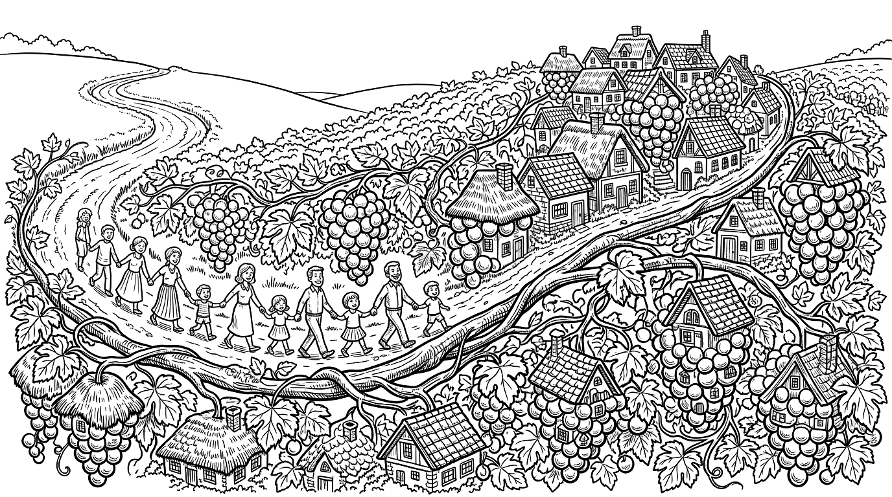
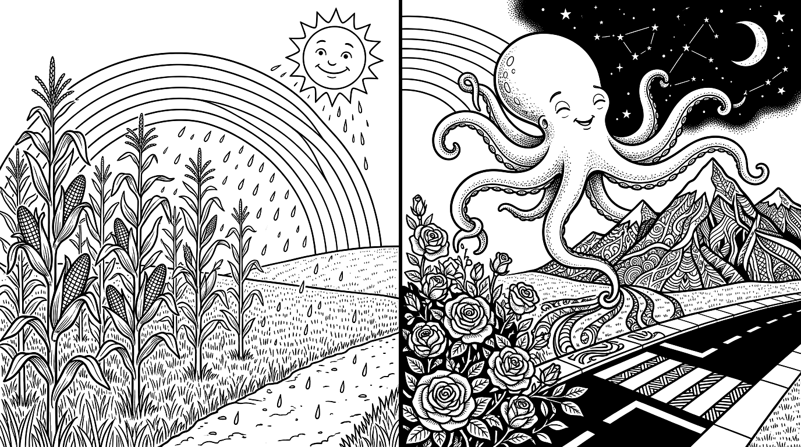
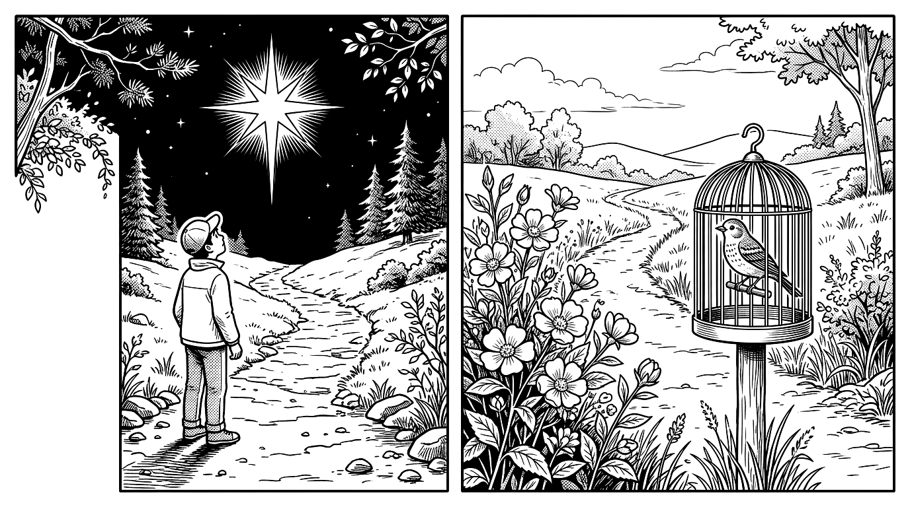
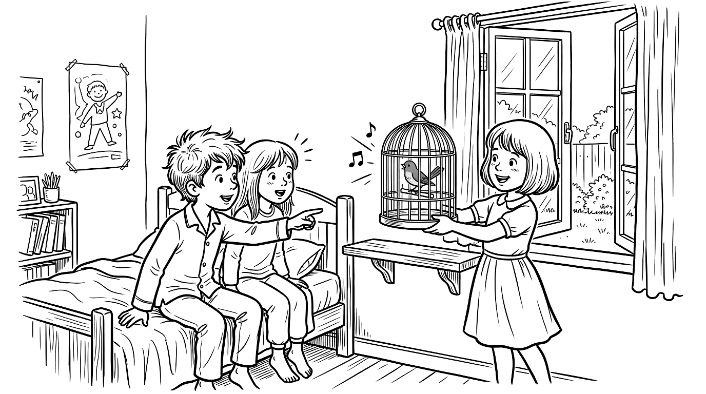
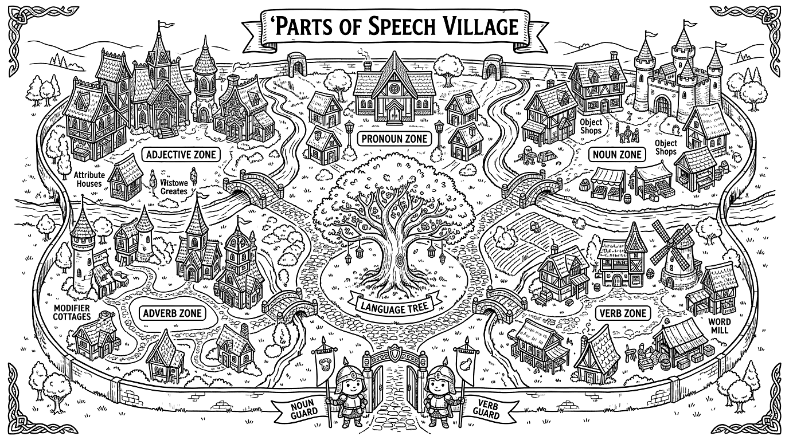
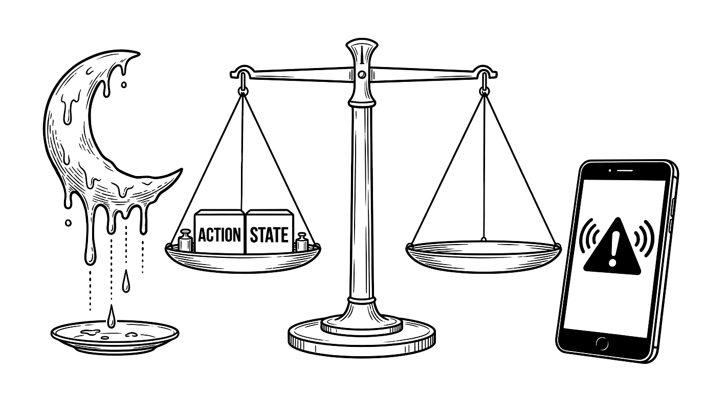

[카테고리 1] 1-(1) 〈길〉 — 비유(직유·은유·의인)와 운율의 개념 및 제재 본문 완독 분석 (교과서 12~21쪽)

[시각화 이미지 1] '길(포도 덩굴) ➔ 마을(포도송이) ➔ 집(포도알) ➔ 세계(한 덩이 과일)'의 유기적 비유와 사람들의 소통
1. 비유(比喩)와 운율(韻律) 핵심 개념 체계
| 구분 |
핵심 정의 · 형성 방법 · 표현 효과 |
비유(比喩)
[빈출] |
• 뜻: 표현하려는 대상(원관념)을 그와 비슷한 성질(유사성)을 지닌 다른 대상(보조 관념)에 빗대어 표현함.
• 효과: ① 참신하고 생생한 느낌 부여, ② 구체적이고 명확한 인상을 주어 장면을 쉽게 떠올림.
• 3대 종류:
1) 직유법: '같이(같은), 처럼, 듯이, 인 양' 연결어 사용 (예: 담요처럼 따뜻한 사람, 포도송이 같은 마을)
2) 은유법: 연결어 없이 'A는 B이다' 형식 (예: 길은 포도 덩굴, 저는 담요입니다)
3) 의인법: 사람이 아닌 것을 사람처럼 표현 (예: 해님이 웃는다) |
운율(韻律)
[빈출] |
• 뜻: 시를 읽을 때 느껴지는 말의 가락(리듬감).
• 형성: ① 같거나 비슷한 소리(음운)·단어·구절·문장 구조 반복, ② 규칙적 끊어 읽기(음수율), ③ 음성 상징어(의성어·의태어) 사용.
• 효과: 음악성·분위기 형성, 주제 강조, 화자의 감정 섬세히 전달. |
2. 〈길〉 4단계 연쇄 비유 매핑표 [빈출]
| 원관념 |
보조 관념 |
두 대상의 비슷한 점 & 수사법 |
| 길 (덩굴 가지) |
포도 덩굴 |
여러 갈래로 땅 위에 뻗어 나감 (은유법) |
| 마을 |
포도송이 |
작은 집(포도알)들이 옹기종기 모여 있음 (직유법) |
| 집들 |
포도알 |
줄기(길)마다 하나씩 달려 모여 있음 (직유법) |
| 세계 |
한 덩이 과일 |
서로 돕고 이어져 하나로 뭉쳐 익어 감 (은유법) |
3. [본문 전문] 김종상, 〈길〉 (14~15쪽) [빈출]
작품 원문 완독: 김종상, 〈길〉 (현대시 / 자유시 / 서정시)
[1연] 길은 포도 덩굴 은유법(길=포도 덩굴)
몇백 년이나 자라 / 땅덩이를 다 덮었다
오랜 세월 온 땅을 연결한 길
[2연] 이 덩굴 가지마다
큰길에서 갈라진 여러 작은 길마다
포도송이 같은 마을이 있고
직유법(마을=포도송이)
포도알 같은 집들이 달렸다
직유법(집들=포도알)
[3연] 포도알(집)이 늘 때마다 /
포도송이(마을)는 커 가고
갈봄 없이 자라 가는 /
이 덩굴(길)을 통하여
갈봄=가을과 봄(사계절 내내)
[4연] 사람과 사람이 도와 가고 / 마을과 마을은 이어져서
문장 구조 반복
[5연] 세계는 한 덩이 과일로 은유법(화합하여 하나 된 인류 공동체)
토실토실 익어 가고 있는 것이다.
의태어(운율·생동감) / 평화로운 성숙
• 주제: 길을 통해 사람들이 서로 돕고 소통하며 하나가 되어 가는 평화로운 세계
• [함정] 3연 시어 주의: 2연(`포도송이 같은 마을`)은 직유법이나, 3연의 `포도알(집)`, `포도송이(마을)`, `이 덩굴(길)`은 원관념 없이 보조 관념만으로 대상을 가리킴.
[카테고리 2] 1-(1) 〈길〉 — 문제 해결과 적용 (〈햇비〉 · 〈문어의 꿈〉 본문) 및 어휘·점검 (교과서 22~27쪽)

[시각화 이미지 2] 윤동주 〈햇비〉(옥수숫대·무지개 하늘 다리·해님) & 안예은 〈문어의 꿈〉(꿈속에서 자유롭게 변신하는 문어)
[적용 본문 1] 윤동주, 〈햇비〉 전문 (22쪽) [빈출]
[1연] 아씨처럼 나린다 직유법(햇비=아씨) /
보슬보슬 햇비 의태어·4·2(3)조
맞아 주자 다 같이 /
옥수숫대처럼 크게 직유법(아이들=옥수숫대)
닷 자 엿 자 자라게 /
해님이 웃는다 / 나 보고 웃는다. 의인법·어미 반복
[2연] 하늘 다리 놓였다 은유법(무지개=하늘 다리) /
알롱알롱 무지개 의태어
노래하자 즐겁게 / 동무들아 이리 오나 / 다 같이 춤을 추자
해님이 웃는다 / 즐거워 웃는다. 의인법·1연과 대칭 반복(운율·주제 강조)
[적용 본문 2] 안예은, 〈문어의 꿈〉 전문 (23쪽) & 어휘 점검
나는 문어 꿈을 꾸는 문어 / 꿈속에서는 무엇이든지 될 수 있어.
나는 문어 잠을 자는 문어 /
잠이 드는 순간 여행이 시작되는 거야. 은유(꿈=여행)
높은 산에 올라가면 나는 초록색 문어 / 장미꽃밭 숨어들면 나는 빨간색 문어
횡단보도 건너가면 나는 줄무늬 문어 / 밤하늘을 날아가면 나는 오색찬란한 문어가 되는 거
'~면 나는 ~ 문어' 문장 구조 반복(운율)
• [함정] 27쪽 어휘 오용 교정: ① 갈대가 바람에 토실토실(X ➔ 한들한들) 흔들린다. ② 방수가 된다는 특수(X ➔ 특성)가 있다. ③ 의견이 참견하다(X ➔ 참신하다).
[카테고리 3] 1-(2) 〈사랑하는 별 하나〉 — 상징의 개념·특성·효과 및 제재 본문 완독 분석 (교과서 28~35쪽)

[시각화 이미지 3] 어두운 밤길을 비춰 주는 '별'과 쓸쓸한 길가에서 웃어 주는 '하얀 들꽃'의 상징적 이미지 대조
1. 상징(象徵)의 개념 및 [함정] 비유 vs 상징 비교
| 구분 |
핵심 내용 정리 |
상징(象徵)의 뜻과 특성
[빈출] |
• 뜻: 인간의 내적 경험·감정·사상 같은 추상적 개념(원관념)을 구체적 대상(보조 관념)으로 나타내는 표현 방법.
• 핵심 특성: 표현하려는 추상적 개념이 겉으로 드러나지 않고 구체적 대상만 드러나서 의미를 다양하게 해석할 수 있음.
• 효과: ① 독자는 추상적 개념을 구체적으로 그리고 숨은 의미를 깊이 있게 감상함, ② 작가는 주제를 인상 깊게 드러내고 대상에 새로운 의미를 부여해 작품 의미를 풍부하게 함. |
비유 vs 상징
[함정] |
• 비유: 원관념(A)과 보조 관념(B)이 함께 드러남 (1:1 유사성)
예) 1연 "나도 별(B)과 같은 사람(A)이 될 수 있을까" [직유법]
• 상징: 원관념(A)은 숨겨지고 구체적 대상(B)만 단독 제시됨 (다의성)
예) 3연 "가슴에 사랑하는 별(B) 하나를 갖고 싶다" [상징] |
2. 〈사랑하는 별 하나〉 대칭 구조 및 시어 대조 [빈출]
| 구분 |
1연 ~ 2연 (`~ 될 수 있을까`) |
3연 ~ 4연 (`~ 갖고 싶다`) |
| 화자의 소망 |
타인에게 위로·희망을 주는 존재(별과 같은 사람, 꽃, 하얀 들꽃)가 되고 싶은 소망 (나 ➔ 타인) |
내가 힘들 때 나를 위로·정화하고 길을 비춰 줄 존재(별 하나, 그런 사람)를 만나고 싶은 소망 (타인 ➔ 나) |
| 대조적 시어 |
• 부정적 상황(고독·시련): `외로워`, `세상일이 괴로워 쓸쓸히`, `마음 어두운 밤`
• 긍정적 존재(위로·희망): `별`, `꽃(하얀 들꽃)`, `화안히`, `맑은 눈빛`, `길을 비추어 주는` |
3. [본문 전문] 이성선, 〈사랑하는 별 하나〉 (30~31쪽)
작품 원문 완독: 이성선, 〈사랑하는 별 하나〉 (현대시 / 서정시)
[1연] 나도 별과 같은 사람이 / 될 수 있을까. 직유법('같은') / 성찰적 소망
외로워 쳐다보면 / 눈 마주쳐
마음 비춰 주는 / 그런 사람이 될 수 있을까.
[2연] 나도 꽃이 될 수 있을까. 타인에게 기쁨과 위안을 주는 상징물
세상일이 괴로워 쓸쓸히 밖으로 나서는 날에
가슴에
화안히 안기어
'환히'의 시적 허용(운율·밝은 이미지 강조)
눈물짓듯 웃어 주는 직유+의인법(슬픔에 공감하며 따뜻이 위로함)
하얀 들꽃이 될 수 있을까.
소박하고 순수한 위로의 존재
[3연] 가슴에 사랑하는 별 하나를 갖고 싶다. 상징(원관념 생략, '별' 단독 제시)
외로울 때 부르면 다가오는 /
별 하나를 갖고 싶다.
[4연] 마음 어두운 밤 깊을수록 절망과 고통이 심화되는 극한 상황
우러러 쳐다보면 / 반짝이는 그
맑은 눈빛으로 나를 씻어 내면의 슬픔 정화
길을 비추어 주는 삶의 올바른 방향 인도 /
그런 사람 하나 갖고 싶다.
• 29쪽 생각과 발견(《소나기》 '대추'): 구체적 대상 '대추'만 건네고 추상적 마음을 직접 말하지 않았기 때문에 다감이(친하게 지내고 싶은 마음)와 현주(건강하라는 뜻)가 서로 다르게 해석함 ➔ 상징의 다의성 증명!
[카테고리 4] 1-(2) 〈사랑하는 별 하나〉 — 문제 해결과 적용 (〈파랑새〉 · 협동 시 본문) 및 어휘·점검 (교과서 36~41쪽)

[시각화 이미지 4] 꿈속 여행에서 찾지 못한 '파랑새(행복)'를 아침에 깨어나 자기 집 새장에서 발견하고 이웃 소녀에게 나누어 주는 틸틸과 미틸
[적용 본문] 모리스 마테를링크, 〈파랑새〉 핵심 원문 (36~37쪽)
•
[앞부분 줄거리] 크리스마스 전날 밤, 요술쟁이 할머니가 아픈 딸을 위해 파랑새를 찾아달라고 부탁함. 남매는 꿈속에서
추억의 나라, 밤의 궁전, 숲을 들르지만 찾지 못함.
•
[행복의 나라] “안녕! 우리들은
너희 집에 사는 행복들이야. 나는
건강의 행복! /
맑은 공기의 행복! /
부모님을 사랑하는 행복! /
봄의 행복! /
엄마의 행복!”
“우리 집에 행복이 그렇게 많단 말이야?” ➔
“그럼! 우리들은 늘 사람들 곁에 있어. 사람들이 그걸 모를 뿐이지. 여기는 행복이 넘쳐 나는 곳이라서 파랑새가 필요 없단다.”
•
[잠에서 깬 우리 집] 이웃집 할머니가 앓아누운 딸을 위해 새를 빌리러 옴. 틸틸이 자기 방 새장을 보고 외침:
“아, 파랑새다! 그렇게 찾았는데. 파랑새가 우리 집에 있었어!” ➔ 할머니에게 파랑새를 선물함 ➔ 다음날 이웃 여자아이의 병이 다 나음.
•
[결말] 파랑새가
포르르 날아가 버리자 울음을 터뜨린 소녀에게 틸틸이 말함:
“괜찮아. 내가 또 파랑새를 찾아 줄게. 파랑새는 우리 가까이에 있으니까.”
| 분석 항목 |
〈파랑새〉 및 38쪽 협동 시 명언 핵심 정리 [빈출] |
'파랑새'의
상징적 의미 |
• 추상적 개념: 진정한 '행복'
• 주제: 행복은 먼 곳에 있는 것이 아니라 우리 집(일상)과 주변 가까이, 그리고 이웃과 나누는 마음속에 존재함을 일깨움. |
38쪽 4대 명언
상징 매핑 |
① 안중근(정의는 죽지 않는다) ➔ 소나무, 바위 뚫는 새싹
② 나폴레옹(불가능은 없다: 도전) ➔ 거친 파도 헤치는 배
③ 헬렌 켈러(다른 쪽 행복의 문: 희망) ➔ 아침 해, 봄꽃
④ 테레사(값진 인생의 존엄성) ➔ 보석, 화분 속 꽃나무 |
| 41쪽 필수 어휘 |
• 우러르다(위를 향해 고개를 정중히 쳐들다) / 조잘대다(낮은 목소리로 빠르게 말하다) / 포르르(작은 새가 날아가는 소리·모양) |
[카테고리 5] 3-(2) 〈품사의 종류와 특성〉 — 단어·품사 3대 기준, 9품사 체계 및 탐구 본문 (교과서 122~143쪽)

[시각화 이미지 5] 품사 나라 5대 기능 마을(체언·용언·수식언·관계언·독립언)과 중심 상징물 느티나무 지도
1. [1단 전폭 인포그래픽] 한 문장 9품사 올인원 완전체 상호작용 지도 [빈출]
앗!감탄사
독립언/불변어
(놀람·독립) |
그대명사
체언/불변어
(사람 지시) |
가조사
관계언/불변어
(주격 조사) |
새관형사
수식언/불변어
('옷'만 수식) |
옷명사
체언/불변어
(사물 이름) |
둘수사
체언/불변어
(수량+조사'을') |
을조사
관계언/불변어
(목적격 조사) |
아주부사
수식언/불변어
('예쁘게' 수식) |
예쁘게형용사
용언/가변어
(상태/예쁘다) |
입는다동사
용언/가변어
(동작/입다) |
2. 단어의 정의 & 5대 기능군·9품사 마스터 표
• 단어(낱말): 홀로 쓰일 수 있는 말 + [함정] 홀로 쓰일 수 없으나 앞말에 붙어 쉽게 분리할 수 있는 말(조사)도 단어로 인정!
• 품사 3대 분류 기준: ① 형태(불변어/가변어) ➔ ② 기능(5대 기능: 체언·용언·수식언·관계언·독립언) ➔ ③ 의미(9품사: 단어 갈래 전체의 공통 의미)
| 형태 |
기능(5언) |
의미(9품사) 및 핵심 특성 |
불변어
(형태
불변) |
체언
(주·목·보) |
• 명사: 대상의 이름 (구체: `집, 의자` / 추상: `사랑, 노력, 가을`)
• 대명사: 이름을 대신 가리킴 (`나, 그, 누구, 이것, 여기, 거기`)
• 수사: 수량(`하나, 둘`)이나 순서(`첫째, 둘째`) + 조사 결합 가능! |
수식언
(꾸밈) |
• 관형사: 체언만 수식, 조사 결합 절대 불가 (`새, 헌, 옛, 단, 이, 세`)
• 부사: 주로 용언 수식, 다른 부사·문장 전체(`역시`)도 수식 (`참, 쭉`) |
| 관계언 |
• 조사: 체언 뒤 결합, 문법적 관계(`가, 를`) 또는 특별한 뜻(`도, 만`) 추가.
[함정] 서술격 조사 `'이다'`는 예외적으로 활용하는 가변어! |
| 독립언 |
• 감탄사: 놀람·느낌(`앗, 우아`), 부름(`야, 이봐`), 대답(`네, 아니`) |
| 가변어 |
용언
(서술) |
• 동사: 대상의 움직임/작용 (`읽다, 나오다, 되다, 돌아가다`)
• 형용사: 상태/성질 (`짜다, 빨갛다, 무뚝뚝하다, 싱겁다, 없다`) |
3. [교과서 탐구 본문 원문 5종] 문법 정밀 해부 [빈출]
① 129쪽 분류 기준 예문 & ② 131쪽 느티나무 대명사 본문
•
"진아는 국이 너무 짜서 물을 마셨다." ➔ 가변어:
`짜서`(형용사),
`마셨다`(동사) / 수식언:
`너무`(부사) / 명사:
`진아, 국, 물`
•
"준수가 빨간 자두와 노란 참외를 둘 다 먹었다." ➔
[함정] `빨간`(빨갛다), `노란`(노랗다)은 관형사가 아니라 상태·성질을 나타내는
형용사! (`둘`=수사)
•
[131쪽 본문] "
이것(사물: 느티나무)은 ‘체언 마을’을 상징하는 느티나무야. 이 나무를
누가(사람) 심었는지 알려 줄까? 원래 한 노인이 살았어.
그(사람: 한 노인)는
이곳(장소: 느티나무 자리)에 집을 지었지. 집 옆에 정원을 만들어서
거기(장소: 정원)에 나무를 심고……."
③ 133쪽 폴 세잔 정물화 비평문 & ④ 134쪽 양귀자 소설 본문
•
[133쪽 세잔 본문] "폴 세잔의 〈우유 주전자와
과일(명)이 있는 정물〉을 봅시다.
여기(대명)에는 다양한 사물이 있는데요... 접시에 담긴
사과(명)...
컵(명)의 표면은 평평합니다.
이것(대명)은
그(대명: 세잔)가... 모습을 모아서
하나(수사)의 장면에 담았기 때문입니다.
이(대명사! 조사 `는` 결합)는 매우 독창적인 방법이었습니다."
•
[134쪽 양귀자 〈길모퉁이에서 만난 사람〉 본문] "그이는 매일 아침 9시에 일터로
나와서(동: 나오다) 다시 저녁 9시가
되면(동: 되다) 가운을
벗고(동: 벗다) 집으로
돌아간다(동: 돌아가다). 일터에서의 그이는 다소
무뚝뚝하고(형: 무뚝뚝하다)
뻣뻣하다(형). 남하고
싱거운(형: 싱겁다) 소리를
나누는(동: 나누다) 일도 거의
없다(형: 없다)."
[카테고리 6] 3-(2) 〈품사의 종류와 특성〉 — 동사/형용사 판별 저울, 3대 함정 클리닉 및 실전 국어 자료 분석 본문 (교과서 144~149쪽)

[시각화 이미지 6] 동사(ACTION) vs 형용사(STATE) 1초 판별 저울과 《달 샤베트》(부사 중심) vs 안전 안내 문자(명사 중심) 대비
1. 동사 vs 형용사 판별 저울 (136쪽) [함정]
| 판별 테스트 |
동사 (`가다, 먹다, 크다[성장]`) |
형용사 (`크다[상태], 예쁘다, 없다`) |
| 현재 시제 (`-ㄴ다/-는다`) |
결합 가능 (O) (`간다, 먹는다`) |
결합 불가 (X) (`예쁜다X, 없는다X`) |
| 명령형 (`-아라/-어라`) |
결합 가능 (O) (`가라!, 먹어라!`) |
결합 불가 (X) (`손이 커라!X, 예뻐라!X`) |
| 청유형 (`-자`) |
결합 가능 (O) (`가자, 먹자`) |
결합 불가 (X) (`손이 크자X, 예쁘자X`) |
2. [교과서 144쪽 본문] 실전 국어 자료 어법 오류 수정 3종 [함정]
| 교과서 오류 원문 |
문법적 오류 원인 및 바른 교정 |
신문 기사 헤드라인
"옛부터 전해 내려온 우리 마을의 전설" |
• 원인: `옛`은 체언만 꾸미는 [관형사]이므로 뒤에 조사(`부터`)가 결합할 수 없음!
• 교정: 명사로 바꾸어 `"옛날부터"` 또는 `"예로부터"`로 고침. |
나의 좌우명
"항상 마음이 예쁘자." |
• 원인: `예쁘다`는 [형용사]이므로 청유형 어미(`-자`)와 결합 불가!
• 교정: `"마음을 예쁘게 가꾸자"` 또는 `"마음이 예뻐지자"`(동사화). |
입주민 주차 안내문
"놀이터 근처에 주차하지 마십시오... 그곳에 주차를 부탁드립니다." |
• 원인: 대명사 `그곳`이 앞 문장의 `'놀이터 근처'`를 가리켜 주차 금지 구역에 주차하라는 모순 발생!
• 교정: `"다른 곳(지정된 주차 구역)에"` 주차를 부탁드립니다. |
3. [교과서 145~146쪽 본문] 담화별 품사 사용 효과 비교 [빈출]
[본문 1] 백희나, 《달 샤베트》 (145쪽) — 부사(의성어·의태어) 집중 사용
[1]
아주아주 무더운 여름날 밤이었습니다.
너무너무 더워서 잠도 오지 않고, 아무것도 할 수 없었습니다. [2] 모두들 창문을
꼭꼭 닫고, 에어컨을
쌩쌩, 선풍기를
씽씽 틀며 잠을 청하고 있었습니다. [3]
똑...... 똑.. 똑 어! 이게 무슨 소리지? [4] 창밖을 내다보니, 커다란 달이
똑똑 녹아내리고 있었습니다.
➔
효과: 소리와 모양을 흉내 낸
[부사]를 많이 사용하여 장면을
생생하고 감각적·실감 나게 표현함.
[본문 2] 폭염 안전 안내 문자 (146쪽) — 명사 중심 간결한 전달
"안전 안내, 오늘 10시
폭염 예정, 낮 동안
외출 자제,
물놀이 안전
유의 바람."
➔
효과: 수식언(관형사·부사)을 배제하고
[명사] 중심으로 써서 긴급 정보를
신속·정확·분명하게 전달하고 신뢰도를 높임 (※ 부사를 많이 쓰면 내용이 산만해지고 신뢰도가 떨어짐!).
4. [교과서 148쪽 본문] 세상을 움직인 연설가 4인의 품사 전략
| 연설가 |
핵심 활용 품사 및 전달 효과 [빈출] |
| 백범 김구 |
`독립, 우리나라, 민족` 등 [명사] 반복 ➔ 자주독립과 세계 진출 의지 강조 |
| 스티브 잡스 |
구체적 명사 + `대단한, 멋진, 놀랍다` 등 [형용사] 다수 사용 ➔ 감정에 호소·도전 격려 |
| 말랄라 |
`파괴되다, 막다` [동사] + `권리, 평등, 교육` [추상 명사] ➔ 교육권 보장 촉구 |
| 스파르시 샤 |
`십오(년), 백삼십(번)` 등 [수사] 제시 ➔ 고통 극복 의지의 사실성·설득력 확보 |